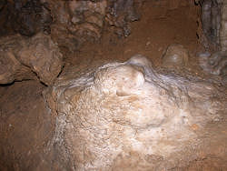
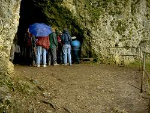

| In Deutsch |
| In Deutsch |
Gutenberger Höhle - Heppenloch
Cave of Gutenberg
Useful Information
 |
| Image: dripstone formations. |
| Location: | 40km northwest of Ulm. From Ulm 39km on the B28, then 7km B465 to turnoff Schopfloch. From A8 exit Kirchheim/Teck ~15km B465 to turnoff Schopfloch. Through Schopfloch, at the city limits turn left to Krebsstein. Parking at the road Schopfloch-Krebsstein, 15 min walk to the caves. |
| Open: |
MAY to OCT Sat 13-16, Sun, Hol 10-16, closed on days with bad weather. Additional times after appointment. [2014] |
| Fee: |
Adults EUR 3.50, Children (4-16) EUR 1.50. Groups (15+): Adults EUR 2.30, Children (4-16) EUR 1.30. Price includes visit to both caves. [2014] |
| Classification: |
 Karst cave,
horizontal cave, Malm Karst cave,
horizontal cave, Malm
|
| Light: | electric |
| Dimension: | L=180m, A=690m asl. Portal: B=5m, H=3m. |
| Guided tours: | L=160m, D=30min, V=5,100/a [2005]. |
| Photography: | Allowed |
| Accessibility: | Not accessible; many stairs and steep trails |
| Bibliography: |
Wilfried Rosendahl, Matthias Lopez Correa, Christoph Gruner, Gerd Polikeit (1999):
Die Gutenberger Höhlen,
Grabenstetter höhlenkundliche Hefte, Nr. 2, ARGE HuK Grabenstetten, Grabenstetten.
Kurt Riek, Wolfgang Ufrecht (1976): Das Gutenberger Höhlensystem, Der Laichinger Höhlenfreund 21-1, 1976, S. 7ff. Helmuth Gußmann (1960): Neues aus alter Albhöhle, Sonderdruck aus Blätter des Schwäbischen Albvereins Nr. 1/1960 |
| Address: |
Ortschaftsverwaltung Gutenberg, Hauptstraße 14, 73252 Lenningen-Gutenberg, Tel: +49-7026-7822
(Mon 15-17, Tue-Fri 9-12).
E-mail: |
| As far as we know this information was accurate when it was published (see years in brackets), but may have changed since then. Please check rates and details directly with the companies in question if you need more recent info. |
|
History
|  |
| Image: stalagmite with micro gours. |
| 07-AUG-1889 | foundation of the Schwäbischer Höhlenverein (Swabian Cave Club). |
| NOV-1889 | first archaeological excavation by Karl Gußmann. |
| APR-1890 | opened to the public. |
| 1893 | additional excavation by Karl Gußmann in the new parts. |
| 1950-70 | scientific examination of the bones by Prof. Dr. Karl Dietrich Adam, Staatliches Museum für Naturkunde, Stuttgart. |
| 1964 | installation of a bronze plate in memory of Karl Gußmann. |
| 1967 | electric light. |
Description
|  |
| Image: The entrance of the Gutenberger Höhle, called Heppenloch. |
 |
| Image: small cave pool. |
The Gutenberger Höhle is primarily of palaeontological interest. In the entrance area, called Heppenloch, the remains of middle Pleistocene animals were found. The dixscoveries include rhinoceros, cave bear, lion and wild horses. Unique for the Swabian Jura are finds of monkeys (Macaca sylvana suevica) and wolf (Cuon alpinus PALLAS), also named Rothund (red dog).
The Heppenloch is freely accessible and was known to the locals for a very long time. It is a cave portal with a 17m deep entance chamber. The cave tour shows the rest of the cave, which was discovered during the first excavations 1889. The excavation was the very first action of the new founded Schwäbischer Höhlenverein.
During additional excavations in 1893, Karl Gußmann found a 1m long tusk, 200m deep in the cave. It is not clear, how the tusk got there. There was the theory, that ice age man put it there, maybe for some spiritual reasons.
The Schwäbische Höhlenverein (Swabian Cave Club) was founded on the 27-AUG-1889 in the town Gutenberg. The first chairman was Karl Gußmann. It was the first caving club in Germany. In the first 20 years of its existence the club members worked very hard and so the club was very successful. This is one reason, why caving soon attracted many people on the Schwäbische Alb.
Most findings of the Swabian Cave Club are today in the geological-paleontological division of the Staatliches Museum für Naturkunde (Natural History Museum) in Stuttgart. Some findings are on display in the Heimatmuseum Kirchheim unter Teck. One room is called Gußmannsaal to the honor of Karl Gußmann.
- See also
 Gußmannhöhle
Gußmannhöhle Search Google for "Gutenberger Höhle"
Search Google for "Gutenberger Höhle" Google Earth Placemark
Google Earth Placemark Gutenberger Höhle - Wikipedia
(
Gutenberger Höhle - Wikipedia
( )
) Lenningen - Gutenberger Höhlen,
official website.
()
Lenningen - Gutenberger Höhlen,
official website.
()- Über die "Knochenhalle" zum "Gussmannsdom" | Stadtanzeiger / Filder Extra - Nachrichtenportal für Stuttgart
(visited: 26-JUL-2014)
()
- Höhlen bei Gutenberg / Schwäbische Alb
(visited: 26-JUL-2014)
()
- Gutenberger Höhlen « Arbeitsgemeinschaft Höhle und Karst Grabenstetten e. V.
(visited: 26-JUL-2014)